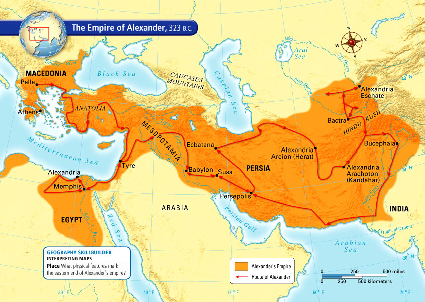
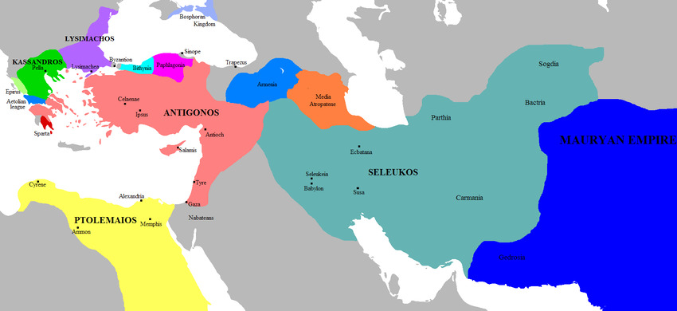

The Dark Age between 1200-1000 BCE destroyed the previously developed Greek writing system, leaving them to begin anew. Trade and cultural contact with Near Eastern societies encouraged the re-development of Greek civilization. Fierce competition for leadership in the Dark Age shaped the characteristic value of striving for excellence among the Greeks. The eighth-century poems of Homer depict the struggle for excellence and its often painful consequences.
By the eighth century, Greek society was again prosperous enough for new social forms to emerge. The most notable example is the institution of the Olynmpic games, an athletic competition that occurred every four years and demonstrates the high value Greeks placed on excellence and self-development.
From approximately 750-500 BCE, the Greeks developed a new form of city-state known as the polis. The Greek polis, unlike the Mesopotamian city-states, was not governed by a monarchy; instead, the Greeks goverened as a relatively egalitarian community governed by agreed-upon law. Greek city states were fairly small, dispersed around the Aegean Sea in the Mediterranean. The proximity of the settlements to the Aegean Sea promoted an extensive seaborne trade network. By the sixth century BCE, Greek settlements had grown outward as far as Spain, southern France and southern Italy to the west, North Africa to the south, and the Black Sea to the east.
The invention of citizenship was a Greek innovation with no known historical precedent. It is thought to have developed as poorer men demonstrated their usefulness in military pursuits, expecting greater political rights in return. This occurred as the military innovation of the Hoplite phalanx, a large group of infantry soldiers who attacked with spears in a unified, collective manner, usurped the domaniance of the prior form, small calvalry units consisting of wealthy nobles. While the Hoplites opened the door, so to speak, the Hoplites themselves tended to have some means; nonetheless, poorer men, who could not afford Hoplite equipment, fought with objects such as rocks and arrows.
However, the enfranchisement of the poor led directly to using slavery to replace lost labor power. Slaves could be owned by individuals or the city-state itself. At its peak, and one-third of some city-states' population was composed of slaves, which were so affordable that even middle-class citizens could own them.
While only men participated in politics and governance of the city-state, women had citizenship rights. Marriages were arranged, and women were assigned a male guardian. This guardian was first her father, and then her husband; this was done to regulate births and sustain the population, as well as control property. Women often played prominent roles in Greek religious cult practices.
During the Archaic age, the Greeks developed lyric poetry and philosophy, and rationalism in particular.
Three forms of governance developed in the Greek city-states: oligarchy, tyranny and democracy.
Located in a valley on the Peloponnese, Spartan society was organized around the needs of its military. All male citizens were part of a standing army. Spartan society was highly collectivist, with the importance of the state preceding the individual. Boys lived in military barracks undergoing intensive military training from the age of 7 to the age of 30, and the bonds built in this environment outweighed the importance of family, a situation that continued past the age of military training.
Women enjoyed great freedom, having even more control over their households than other Greek women, as the men were never at home.
The state consisted of three parts: two kings, a council of twenty-eight elders, and a body of five officials known as ephors. The so-called kings were not actually monarchs; their function was to serve as generals of the army and as religious leaders. This post was hereditary. The ephors made policy and enforced law.
Sparta militarized after the defeat of a neighboring city-state, Messenia, over a span of two wars. Sparta then enslaved the Messenians, who were constantly plotting revolt. The Messenians greatly outnumbered Spartan citizens, thus proving a constant threat to societal stability. The Messenian slaves were known as helots. Helots working the fields allowed the citizenry to enjoy great freedom.
Over time, Sparta became unable to replenish its population, leading to decline.
At times a single family could emerge as the sole power-holders. The leader of the family, suppressing all opposition, would come to wield power over the entire city-state. This form of government is known as tyranny. This strategy could be successful if the tyrant ruled gently, earning his subjects' support. However, most tyrannies were short-lived, as their head could be too severe or brutal to maintain compliance with his rule.
The earliest, most notable example of tyranny emerged in Corinth when Cypselus and his family revolted against the dominant oligarchic regime. Cypselus proved popular, demonstrating himself to be a fair and courageous leader. Cypselus' son was not as well-liked, and after his death, the oligarchy was restored.
The emergence of a sizeable middle class in Athens paved the way for the development of democracy. The Athenian middle class grew rapidly following a period of economic prosperity from 800 to 700 BCE. As the middle class expanded, these citizens felt entitled to political participation in the Athenian government. All Athenian adult male citizens had the right to vote on public issues in the assembly by the seventh century BCE. However, elected officials known as archons ran the judicial system, and men of this standing were from the wealthier classes, as they were expected to work without pay and poorer Athenians could not afford this position.
In the late seventh century BCE, Athens faced a serious economic crisis that threatened their nascent democratic system. A man named Draco was appointed to resolve this crisis. Draco's reforms were too far too severe to be functional; for example, he advocated the death penalty for even very minor crimes, and the economy continued to decline. The Athenians then appointed a decorated ex-soldier named Solon, who was able to reach a compromise between citizens on both sides of the growing economic divide. Solon cancelled private debts, but did not redistribute land. In addition, he banned debt slavery, and freed Athenians who had been sold into slavery in this manner. Finally, and most importantly, he ended hereditary aristocratic standing. Only the wealthy could hold the highest levels of public office, but there was now opportunity for upward class mobility through earning greater income. Laborers could, however, continue to vote in the legislative assembly. Solon created created a four-hundred member council selected from a pool of all adult male citizens by way of lottery. This small council prepatred the agenda for the assembly. Solon made it possible for any male citizen to begin a prosecution and to appeal the judgment of an archon. This was balanced by granting more power to the Areopagus Council, a body composed of ex-archons, whose task was to settle accusations against archons. Through these wide-ranging reforms, Solon created a system that saw citizens stand as equals before the law.
Some members of the Athenian elite disliked Solon's reforms, preferring an oligarchy. Their rebellion paved the way for tyranny under the figure of Peisistratus. Peisistratus bought the support of the masses by providing opportunities for labor; however, this had the consequence of these laborers wanting political rights. Peisistratus' son, Hippias, was unpopular and ousted by the Spartans on behalf of the cause of Athenian freedom. Cleisthenes, a member of the Athenian elite, gained popularity with the masses on a platform that promised to further the cause of Athenian democracy. Cleisthenes was elected and defended by the masses against a Spartan army who did not want to see him succeed in his strivings for democratic governance.
Cleisthenes formed organs of the emerging democracy called demes, units comprised of villages and neighborhoods from which officials would be pulled by lottery. The number of officials was proportional to the size of the deme. Yet, it took another fifty years for Athenian democracy to bloom.
Athenian culture flourished during this era of Greek history. Innovating in philosophy, education, history, art and architecture, and science, Athenian culture faced a tension between traditional religious ideas and intellectual and cultural innovation. The vanguard of cultural change tended to be concentrated in the wealthier strata of society, creating tensions along class lines, as poorer Athenians could not afford the same education or to keep the same company. The culture of Athens in its Golden Age influenced Western civilization in ways that can still be felt today.
In the fifth century BCE, the Athenians were afraid of a war with Sparta, so appealed to the Persian king Darius I for assistance. Darius I agreed on the condition that Athens would subordinate itself to his rule. Athenian ambassadors agreed to this arrangement, however, the Athenians rejected these terms in the assembly and failed to notify Darius of their decision. Darius continued to believe that Athens was to submit, sparking a series of conflicts between Perisa and Athens and its allies.
Ionia had long been a Persian colony. In 499 BCE, the Ionians revolted against the Persian-installed leadership and the Athenians offered their assistance. This infuriated Darius, who sent an army to subordinate Athens at the town of Marathon. Greatly outnumbered by the Persians, the Athenians led a charge against the Persian invaders and secured a surprising victory. The Athenians then made a rush to Athens to defend against the Persian navy.
Darius' son Xerxes I, attempting to avenge his father's defeat, decided to invade and conquer the Greek mainland. A small alliance of Greek city-states banded together to resist the massive Persian army. Turned down by most of the wealthiest city-states, the alliance was led by the Spartans. Demonstrating their courage and military prowess, the Spartans blocked the Persians at Thermopylae over a period of several days. With the Spartans defeated, the Persians marched south. The Athenians abandoned their city and fled for the Peloponnese. When the Persians arrived in Athens, they razed the empty city. The Greek alliance then decided to fight a naval battle and took advantage of a bottleneck at the Greek channel between Salamis and the coast of Athens. The Persians, unable to make use of their entire fleet at once, allowed the Greeks victory using heavy warships and Xerxes was sent home.
Demonstrating Athenian military prowess of their own in the Battle of Salamis, the Spartans now saw the Athenians as a rival power. While Sparta focused on building up its infantry, the Athenians invested in naval power. Athens formed an alliance of northern Greek city-states known as The Delian League in anticipation of the return of the Persians, which they would come to dominate through control of financing. Larger, wealthier city-states paid dues in triremes, powerful warships manned by a large crew. The growing power of the laborers staffing the triremes led to an expansion of Athenian democracy at home, but the growing power of Athens led to stricter control of other members of the Delian League. The Athenians were successful in driving out the Persians from the Aegean Sea and this military success greatly enriched Athens by allowing seaborne trade to flourish.
The trireme rowers came to believe that their political participation should be extended beyond the legislative assembly that was already open to them. A member of the elite, Pericles, won his power by appealing to this mass of laborers. The expansion of the political franchise under Pericles has come to be called radical democracy. This government consisted of the assembly, the Council of the Five Hundred, the Council of the Areopagus, an executive board, nine archons, assorted minor officials and the courts. While a select elite occupied the highest positions of power, this system allowed for the participation of a great number of citizens to participate in direct democracy.
Continuing in the work of Cleisthenes, Pericles' modifications to the judicial system stripped further power from the archons. Previously, the archons decided the outcome of most legal disputes. After Pericles' reforms, jurisdiction was handed over to the court system who decided cases by majority vote. The jurors were selected by lottery, and the decision of the majority could overturn the rights of an individual citizen.
War with Sparta broke out in the fourth century BCE and Pericles initiated several naval campaigns. Pericles and Sparta came to a thirty-year truce in 445-446 BCE.
The Athenians' growing confidence in their military capabilities and expanding empire proved an existential threat to the Spartan state. The Spartans, anticipating that the Delian League would take control of the allied city-states of the Spartan-led Peloponnesian League, launched a pre-emptive strike in Attica that set off a war between Athens and Sparta. Pericles adopted a two-part defensively-focused strategy: first, to take advantage of the Delian League's superior naval power to raid the consituent city-states of the Peloponnesian League, and second, avoid engagement on land with the superior Spartan infantry. The Athenians hid behind their impressively fortified city while Pericles hoped the Spartans would give up. The war, however, dragged on for several years, until Athens was hit with an epidemic that killed a large portion of the population. Pericles was among those who died.
The war continued for nearly thirty years, with the Athenians cycling through a series of generals who pursued various strategies more aggressive than Pericles'. The war turned in favor of Sparta when the Athenian general Alcibiades attempted to seize Syracuse from the Spartans. This invasion was a failure and the war took a direction that Athens never recovered from. A brief period of oligarchic rule ensued in Athens which was followed by a seven-year restoration of Athenian democracy. In the final moment of the war, the Persians gave financial assistance to Sparta to build up their navy, leading to Athenian surrender.
Sparta installed a military dictatorship in Athens known as the Rule of the 30, who plundered and brutalized the Athenian population for eight months. A group of Athenian citizens rebelled and restored Athenian democracy, but Athens had already declined irreversibly, never again to reach the heights of its Golden Age.
During the Hellenistic age, Alexander the Great would expand Greek borders far beyond their previous extent, conquering many Near Eastern civilizations in the process. In addition, Alexander would create a unified Hellenistic state, with city-states no longer maintaining their autonomy. The advent of the Hellenistic age led to blending Greek traditions with the cultures of the conquered Near Eastern peoples.
Greek city-states stabilized after the war, but left many struggling and in poverty. Their continued competition with one another led to depletion of financial resources. Socrates, charged with treason, was sentenced to death, a decision many Athenians would soon regret as a betrayal of their most fundamental values. Plato, seeing the death of his mentor, would come to despise democracy, a view espoused in his seminal work, The Republic. Aristotle, following Plato, would contribute a vast body of writing across various domains of philosophy. During this time, the Greek city-states were constantly at war. With no lasting success, the city-states only weakened each other, allowing for the rise of Macedonia.
Two kings, Philip II and his son Alexander, were responsible for the rise of Macedonia as a dominant power. Characterized as barbarians by other Greeks, the rise of Macedonia was not expected. In the 340s BCE, Philip created an alliance of most of the northern and central Greek city-states with Macedonia as its head. He then set out to conquer Persia, but met opposition from the city-states in the south. Philip defeated his enemies at the Battle of Chaeronea, a first step towards Hellenistic unification.
After Philip's murder, his son Alexander cemented his own power by defeating his enemies. In 334 BCE, Alexander led a Greek conquest against the Persian empire and established rule over a staggering range of territory from Anatolia to Egypt to Uzbekistan. Alexander died in 323 BCE, failing to leave an heir.

Territory conquered by Alexander the Great
After Alexander's death, his generals fought for power, and his empire was divided into several kingdoms, again under the rule of monarchy. The borders of these successor kingdoms were in constant flux due to fighting among the emperors. This situation continued until the rule of the Roman Empire arrived. The Romans conquered each kingdom, one at a time. The final blow was delivered in 30 BCE, after Cleopatra VII sided with Mark Antony over Augustus in a civil war. A Roman army invaded the Ptolemaic kingdom, the last remaining Hellenic kingdom, and put an end to its self-rule.

The Hellenistic successor kingdoms